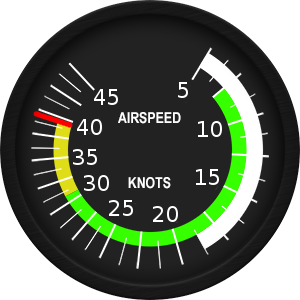
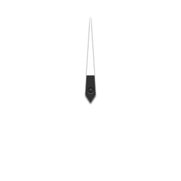

<link rel="import" href="./bower_components/polymer/polymer.html">

<polymer-element name="si2-speed" attributes="width height background color speed webClients author">

  <template>
    <link rel="stylesheet" href="si2-speed.css">

    <h2>Hello from speed</h2>
    <p>Air speed is <strong>{{speed}}</strong> kts</p>
    <p><strong>{{webClients}}</strong> Web clients are connected.</p>
    
    <content></content>

    <div id="canvasContainer">
      <!-- <canvas id="canvasID" class="canvasClass" width="{{width}}" height="{{height}}"></canvas> -->
      <canvas id="canvas0" width="{{width}}" height="{{height}}"></canvas>
      <canvas id="canvas1" width="{{width}}" height="{{height}}"></canvas>
    </div>

    <!--
    
    
    -->
    
  </template>

  <script>
    //Polymer({
    Polymer('si2-speed', {
      width: 300,
      height: 300,
      background: 'white',
      color: 'black',
      speed: 0,
      webClients: 0,
      author: 'Rolf Sommerhalder',

      // on read, not on created, unlike shown in some examples!
      ready: function () {
        // using label ID
        var canvas0 = this.$.canvas0;
        var canvas1 = this.$.canvas1;
        // or using class
        //var canvas= this.shadowRoot.querySelector('.canvasClass')
        var ctx0 = canvas0.getContext('2d')
        var ctx1 = canvas1.getContext('2d')
    
        var dial= new Image()
        var hand= new Image()
        
        dial.onload = function(){
          //ctx0.drawImage(dial,0,0,dial.width,dial.height);
          ctx0.drawImage(dial,0,0);
        }
        dial.src= "speed.png"
        
        hand.onload = function() {
          // 1. Move context to the center point of rotation (defaults to upper left (0,0)).
          ctx1.translate(hand.width/2, hand.height/2);
          // 2. Rotate
          ctx1.rotate((0*Math.PI/180));
          // 3. Move back with negative offsets, and draw
          ctx1.drawImage(hand,-hand.width/2,-hand.height/2,hand.width,hand.height);
        }
        hand.src= "speed-dial.png"
      }
      /*
      speedChange: function (speed) {
          ctx1.clearRect(0, 0, canvasWidth, canvasHeight);
          ctx1.translate(hand.width/2, hand.height/2);
          ctx1.rotate((speed*Math.PI/180));
          ctx1.drawImage(hand,-hand.width/2,-hand.height/2,hand.width,hand.height);
      }
      */
    });
  </script>

</polymer-element>
